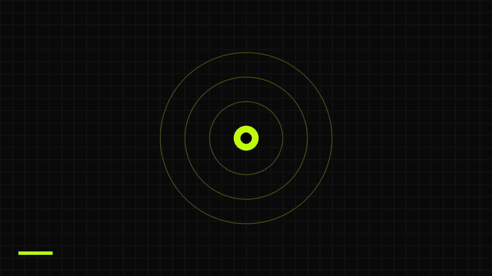

Ground robotics only
The track is limited to robots that move on the ground.
An 8-week syllabus for the mobile robotics track of the Aurora Core Workshop Series 3.0. Students move from the basics of control and Linux to full ROS2 simulations of a differential drive robot and an Ackermann steering robot.

weeks of structured learning
scheduled classes each week
minutes per class
optional 30-minute office hours each week
The track keeps a tight scope so that every week builds on the one before it.
This document sets out the full plan for the mobile robotics track of the Aurora Core Workshop Series 3.0. It lists the topics and projects for each week, explains how the course is delivered, and gives the reasoning behind the order of topics.
The syllabus is strongly modeled on the Series 2.0 mobile robotics track designed by Bakel. A few changes were made to match the differences and limits between his setup and the one used here.
Design falls outside the scope of the course and is only discussed briefly.
The track is limited to robots that move on the ground.
Differential drive and Ackermann steering are both covered in depth.
The omni-drive system is introduced at the start of the course but is not covered further.
All practical work runs in Gazebo and rviz on the student's own laptop or PC.
Select a week to jump to its full outline.
The eight weeks fall into three stages. The first four weeks build the shared groundwork. The last four apply it to two different robots.
Students learn what mobile robotics is, how control and sensing work, how to use Linux and Git, and how ROS2 and Gazebo fit together.

The embedded systems topics are introduced but not covered in depth. Further discussion happens in office hours and Nerd Out classes.
Students work out the kinematics of a two-wheeled drive, then build up the Fenrir robot in simulation from basic motion through to navigation.

Students switch to a car-like platform, learn its kinematics, and repeat the control, SLAM and navigation work on the Yahboom Rosmaster X3.

Fitting this much material into two classes a week over eight weeks is hard. Extra structures are in place so that every student can keep up.

There are two classes each week, and each runs for ninety minutes. The class days have not been confirmed yet and will be announced once the schedule is final.
Each week has two flexible, optional meetings of thirty minutes. They are used to break down complex topics, fix code and solve system-specific problems.
Students may still contact the team outside office hours. Holding the sessions at fixed points lets the team collect feedback on general problems and improve later workshops.
Strong robotics engineers need to be able to research. Students will read canonical research papers and textbooks for the more theoretical and algorithmic topics. They will not be asked to do graduate-level research.
The aim is to teach students to parse dense material, so that they use AI as a tool and not as the solution. YouTube videos are also shared as support material.
These optional classes go deeper into topics already covered, and they give students a space to share their own knowledge and ideas.
They are held every two weeks, have no fixed duration, and are scheduled around the availability of team members.

The course aims at a strong conceptual understanding of the fundamentals behind mobile robotics, together with practical experience. Three phrases sum this up.
Students should be painted a picture and not made to cram a formula. They should hold a clear mental image of each concept, so that their understanding stays deep even when some details are fuzzy.
The basics, such as linear algebra and data structures and algorithms, are repeated and stressed throughout the course as very important.
There is no access to real robots. Simulations in Gazebo and rviz stand in for them and fit naturally with the rest of the course.
Every week starts with writing the algorithms by hand, figuratively speaking. Only then does the class move to the community-standard implementations.
Every topic in the syllabus falls under one of these areas.
Students work in simulation with ROS2, Gazebo and rviz. Two robot models carry the practical work.

A ROS2 based simulated differential drive robot developed from the TurtleBot3 Waffle. It replaces the tracked robot used in the previous workshop.

The Ackermann steering platform for the course, simulated in Gazebo and rviz. It replaces the Rosmaster A1 because STL files for simulation are available.

Students do not need a robotics background to join. They do need some programming experience and their own computer.